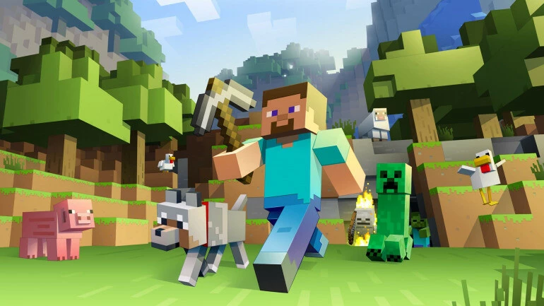
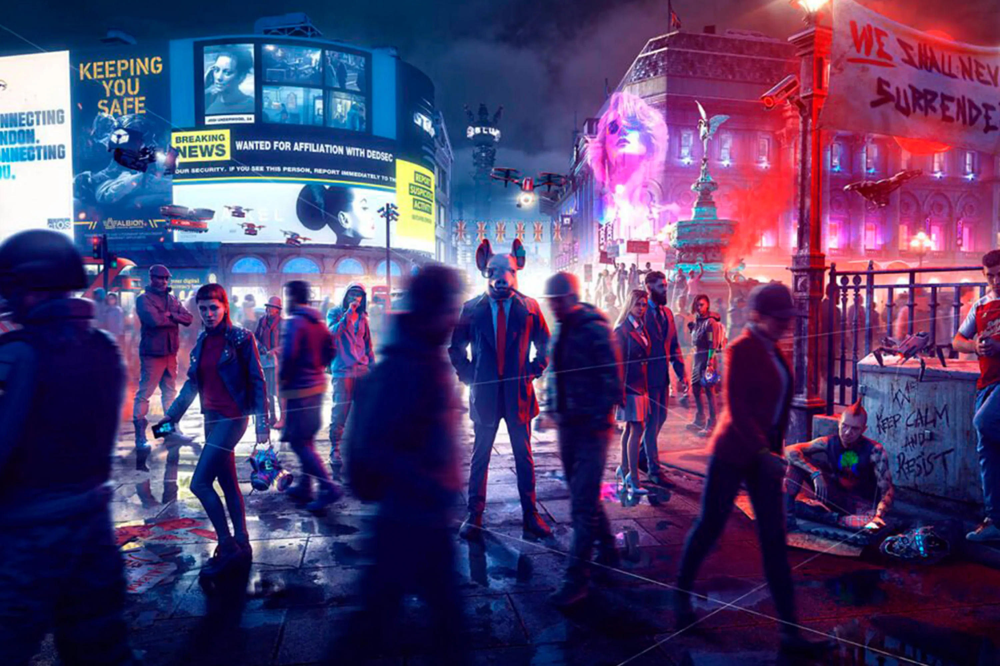

Te recomendamos
Los 8 juegos que abandonarán Xbox Game Pass en Abril
La actriz de voz de Ada Wong en Resident Evil 4 es víctima de acoso en las redes sociales
La mirada de Aloy, el salvaje oeste y los atardeceres en Cyberpunk 2077
Henry Cavil y otros 8 famosos que han demostrado su pasión por los videojuegos
Noticias
La película de Minecraft ya tiene fecha de estreno y Jason Momoa será el protagonista
Es una de las producciones más olvidadas de los últimos años y por fin tenemos fecha de estreno.Tal y como ha informado Discussing Film, la película de Minecraft estará protagonizada por Jason Momoa y llegará a los cines dentro de dos años, es decir el 4 de abril de 2025.
Si los planes no cambiaron, la narrativa buscará contar con la historia de un adolescente que tendrá que salvar el mundo.El joven estará acompañado de un grupo de aventureros cuya misión es acabar con el Ender Dragon. La película estará dirigida por Jared Hess y producida por Roy Lee, Jill Sobel Messick, Mary Parent, Lydia Winters y Vu Bui, según señala el medio Variety.
Dejando de lado las novedades sobre la película, un detalle algo desconocido es que hace poco consiguieron reproducir Minecraft en unos lentes de realidad virtual. Eso lo hizo posible el streamer Skooh gracias a un soporte de Realidad Virtual llamado KAT Walk C 2, una plataforma que permite al jugador andar por su propio pie en los juegos VR.
Super Mario Bros: La Película recibe las primeras opiniones y son muy positivas
La película de Super Mario Bros., que se estrena este mismo miércoles 5 de abril en España, ya recibió los primeros comentarios de la prensa y críticos, y en general son muy positivas. Este pase para la prensa -tanto del mundo del cine como de videojuegos- se realizó el fin de semana, y muchos de los asistentes publicaron breves reacciones en las redes sociales.
The Super Mario Bros. Movie was awesome. Teared up from hype more than once. The music is the star of the show. Nintendo fans are gonna be obsessed. I'm not sure ANY movie in history has ever had THIS MANY easter eggs. AND GOOD ONES! pic.twitter.com/CxvDvPzTnQ
— Tim Gettys (@TimGettys) April 2, 2023
"La película ha sido increíble. Superó las expectativas más de una vez. La música es la estrella de la película", comenta Tim Gettys de Kinda Funny, que señala la gran cantidad de easter eggs y referencias que los fans van a encontrar al universo de Nintendo.
Kit Ellis y Krysta Yang, antiguos presentadores de Nintendo Minute, también compartieron su opinión con un pequeño vídeo. "Dios mío, ha sido increíble. Una carta de amor a todas las décadas y décadas de Mario. Es una película que vas a querer ver muchas veces porque es una referencia tras otra y creo que nos perdimos algunas".
We just got out of the #SuperMarioBrosMovie and loved it! pic.twitter.com/4wubNVmR6K
— Kit & Krysta (@KitandKrysta) April 2, 2023
Estas alabanzas no son sólo de aficionados a los videojuegos. El director Deondre Aviles cree que es "perfecta" y la puntúa con 10/10. "No me sentí así con una película animada desde 2014 con LEGO Movie. Animación impactante y música de Brian Tyler. Va a ser grande. ¡Dadme un universo cinematográfico [de Nintendo]!".
Atom, dedicada a las críticas de películas y sus noticias, la califica de "una aventura encantadora con la pareja de fontaneros de Nintendo, llena de divertidos cameos [...]. Esta no es otra película de videojuegos, es una de las mejores películas familiares de todos los tiempos" que prepara el terreno para secuelas.
#SuperMarioBrosMovie REVIEW: HILARIOUS & MAGICAL DELIGHT. A charming adventure with the Nintendo plumbing duo, full of FUN cameos that’ll drain your warp pipes. This isn’t just another video game movie, it’s one of the BEST family films ever! A fitting end setting up what’s next pic.twitter.com/X8hRkznjqj
— Atom (@theatomreview) April 2, 2023
Una opinión contracorriente
Por supuesto, no se puede contentar a todos. Una de las críticas menos favorables que se publicó ayer es de Germain Lussier, redactor de io9 y Gizmodo: "Unas pocas escenas capturaron el espíritu del juego pero la mayoría son excesivamente alocadas, sin apenas historia, llenas de malos chistes y peores elecciones musicales. Se ve bien pero estaba más aburrido y molesto que entretenido". Ante los comentarios que empezó a recibir, sobre qué tipo de complejidad esperaba con una película de Mario, Lussier negó ser un hater de Nintendo.
The #SuperMarioMovie: I really wanted to like it but I did not.
— Germain Lussier (@GermainLussier) April 2, 2023
A few solid scenes capture the spirit of the game but mostly it's an overly goofy, bare-bones plot, filled w/ bad jokes & worse song choices.
It looks great but I was more bored & annoyed than entertained. pic.twitter.com/D3CnNvbaaN
La película de Mario cuenta, en su versión en inglés, con las voces de Chris Pratt como el protagonista, Charlie Day como Luigi, Seth Rogen como Donkey Kong, Anya Taylor-Joy como Peach, Jack Black como Bowser y Keegan-Michael Key como Toad.
Diablo 4 necesita un buen endgame para mantener a miles de jugadores, y por fin ya se sabe cómo será.
Sin lugar a dudas, uno de los aspectos que más interesan a los jugadores ahora que han probado Diablo 4 es su endgame. Se trata de un elemento clave para mantener el interés de los usuarios y por fin Blizzard ya ha compartido algunos detalles que a continuación desglosaremos.
La compañía lanzó un tráiler extenso sobre el endgame de Diablo 4 en el canal oficial de YouTube de Diablo. Uno de los aspectos que más llama la atención es que el mundo se reiniciará aportando un desafío mayor gracias a que tendremos la posibilidad de elegir 4 dificultades más. Esto nos motivaría a continuar mejorando nuestro equipamiento con tal de afrontar las misiones y las mazmorras en busca de mejores objetos y armas.
Josh Shely, director de Diablo 4, señaló que el pilar fundamental es "jugar a tu manera", lo que quiere decir que "mientras avanzas en la historia hacia el contenido del final desbloquearás actividades nuevas con sistemas de progresión sin importar tu estilo de juego". "Hemos creado un mundo entero en Santuario". Nunca se quedarán sin cosas que hacer", dice Ash Sweetring, productora del juego.
También detallaron que habrá un total de 120 mazmorras adicionales para jugarlas en una dificultad mucho más desafiante. A medida que aumentamos el poder, pasaremos del árbol de habilidades al sistema de leyenda, lo que ofrecerá una mayor profundidad, personalización y más opciones. Si quieres saber más información, el 20 de abril conoceremos más novedades ya que los desarrolladores explicarán algunos detalles adicionales.
Ubisoft quiere revolucionar la inmersión en los videojuegos, y pretende hacerlo con una IA que trabaje sobre los NPC
En el canal de YouTube de Ubisoft se subió un vídeo que explica el funcionamiento de una IA que agiliza el trabajo de los guionistas. Esta herramienta producirá un borrador que generará frases y sonidos en los NPC para fomentar la inmersión en los mundos creados por Ubisoft. Esto permitirá que los guionistas no estén ocupados en tareas rutinarias, lo que ayudará concentrarse en elementos más importantes de la narrativa. Según VGC, esta herramienta fue creada por Ubisoft La Forge, equipo de investigación de la compañía francesa.
¡Enterate de todas las novedades!
Recibí nuestras promociones exclusivas